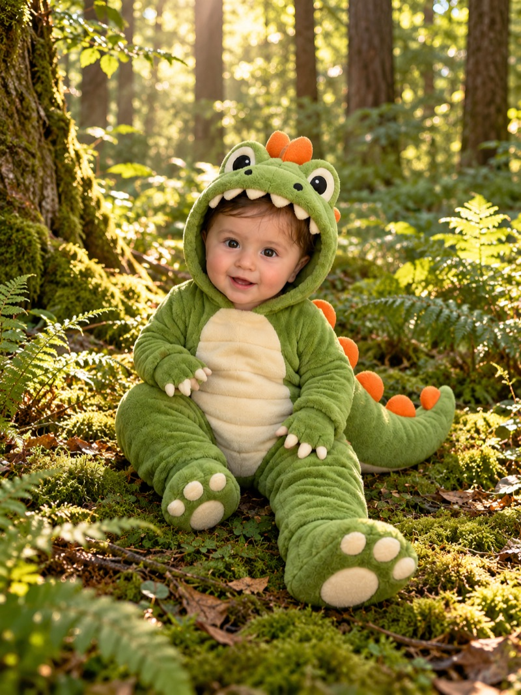

Alerte au parc

?Choisissez votre équipe. Chacune suit sa propre piste dans le parc.
Les 4 équipes appuient en même temps, au signal d'Ornella.
Votre progression est sauvegardée sur ce téléphone
Répondez juste… sinon le T-Rex se rapproche !
⏱️ La prochaine épreuve se lance depuis le parcours, à la fin du tour.
⛔ Rejoignez l'épreuve, mais ne commencez pas avant la fin du compte à rebours. Le téléphone vous dira quand c'est parti !
Un seul correspond à vos 4 indices. Désignez-le !
Il était dans la cuisine… en train de piquer des parts de son gâteau d'anniversaire ! 🍰
C'est bien lui : le Diegosaurus Rex, alias DIEGO !
Et attention… le T-Rex n'est jamais loin de lui.